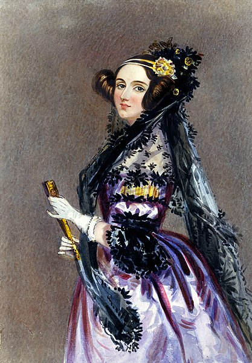

Vem var Ada Lovelace?
Augusta Ada Byron föddes i december 1815 i London. Hennes föräldrar var Anne Isabella Byron och George Gordon Byron men mest känd som Lord Byron. Anne Isabella (kallades Annabella) var en duktig matematiker och var redan som barn begåvad. Hennes föräldrar anställde en pensionerad professor från Cambridge Universitet och hon fick en utbildning inom klassisk litteratur, filosofi, naturvetenskap och matematik. Lord Byron var vid Adas födelse en av Englands mest kända poeter och en angängare romantiken. Han var en notorisk kvinnotjusare, ständigt i skuld och hade ett rykte som "mad, bad and dangerous to know". Giftemålet mellan Annabella och Byron kan tyckas underligt då de var väldigt olika men de gifte sig i början 1815. Äkteskapet höll inte länge utan en månad efter Adas födelse så separerade de och Byron stack till Frankrike och skulle aldrig träffa sin dotter igen.
Uppväxt
Orolig för att Ada skulle få några av hennes fars mer rebelliska drag eller intresse för poesi fick Ada en strikt uppväxt som liknande hennes mammas i bl.a. matematik och logik. I ett utdrag från hennes guvernants dagbok kan vi läsa följande om hennes schema.Vid 13 års ålder hade hon bl.a. William Frend som lärare (som hade varit hennes mammas privatlärare) och via honom lärde hon känna Mary Somerville som var matematiker och populär författare. Genom Mary fick Ada en ingång till Londons vetenskapliga och litterära societet och 1833 träffade hon på Charles Babbage. 1835 gifte hon sig med William King en något äldre herre som delade och uppmuntrade Adas intresse för matematik. 1838 blev King "Earl of Lovelace" och Ada blev då "Countess of Lovelace" och därefter Ada Lovelace. De flyttade ut en bit utanför London och fick tre barn. I ett brev till Mary Somerville kan vi läsa följande om Adas dedikation till matematiken.
Charles Babbage
Charles Babbage började arbeta på sin "The Analytical Engine" i mitten 1830-talet och han och Ada Lovelace blev goda vänner och hon fungerade som ett bollplank och fascinerades av denna maskin och dess möjligheter.
1840 blev Babbage inbjuden till Turin för att hålla en föreläsning där Luigi Menabrea en ung italiensk ingejör deltog. Han skrev sedan den första texten om "The Analytical Engine". 1844 fick Ada förfrågan om att översätta denna text till engelska,
där hon även utökade en hel del bl.a. med den appendix som kallas för "Note G" som innehåller instruktioner för hur ett program i.
Till skillnad från Babbage såg Ada möjligheten att "The Analytical Engine" skulle kunna vara mer än bara en maskin som gör matematiska beräkningar. Utan den skulle rent teoretiskt kunna skapa musik eller konst. Såhär skriver hon i "Note G".
Tyvärr blev aldrig Babbage "The Analytical Engine" byggd då han inte fick några pengar för att bygga den.
Ada hade kanske en till hennes moders besvikelse en fascination för sin far som hon aldrig träffade (han dog 1824). Hon uppskattade poesi och funderande på att skriva matematiskt poesi. Hennes synsätt på matematik kanske bäst beskrivs i denna mening från ett brev till hennes mamma.
Det kanske var just Adas intresse att blanda matematik, logik, fantasi och poesi som gjorde att hon såg saker på ett annorlunda sätt.